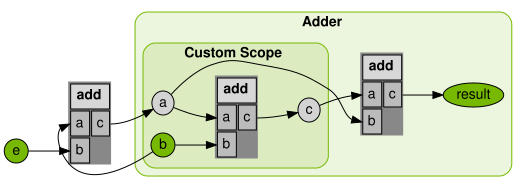

Differentiability#
By default, Warp generates a forward and backward (adjoint) version of each kernel definition. The backward version of a kernel can be used to compute gradients of loss functions that can be back propagated to machine learning frameworks like PyTorch.
Arrays that participate in the chain of computation which require gradients should be created with requires_grad=True, for example:
a = wp.zeros(1024, dtype=wp.vec3, device="cuda", requires_grad=True)
The wp.Tape class can then be used to record kernel launches, and replay them to compute the gradient of a scalar loss function with respect to the kernel inputs:
tape = wp.Tape()
# forward pass
with tape:
wp.launch(kernel=compute1, inputs=[a, b], device="cuda")
wp.launch(kernel=compute2, inputs=[c, d], device="cuda")
wp.launch(kernel=loss, inputs=[d, l], device="cuda")
# reverse pass
tape.backward(l)
After the backward pass has completed, the gradients with respect to the inputs are available from the array.grad attribute:
# gradient of loss with respect to input a
print(a.grad)
Note that gradients are accumulated on the participating buffers, so if you wish to reuse the same buffers for multiple backward passes you should first zero the gradients:
tape.zero()
Note
Warp uses a source-code transformation approach to auto-differentiation. In this approach, the backwards pass must keep a record of intermediate values computed during the forward pass. This imposes some restrictions on what kernels can do and still be differentiable:
Dynamic loops should not mutate any previously declared local variable. This means the loop must be side-effect free. A simple way to ensure this is to move the loop body into a separate function. Static loops that are unrolled at compile time do not have this restriction and can perform any computation.
Kernels should not overwrite any previously used array values except to perform simple linear add/subtract operations (e.g. via
wp.atomic_add())
- class warp.Tape#
Record kernel launches within a Tape scope to enable automatic differentiation. Gradients can be computed after the operations have been recorded on the tape via
tape.backward().Example
tape = wp.Tape() # forward pass with tape: wp.launch(kernel=compute1, inputs=[a, b], device="cuda") wp.launch(kernel=compute2, inputs=[c, d], device="cuda") wp.launch(kernel=loss, inputs=[d, l], device="cuda") # reverse pass tape.backward(l)
Gradients can be accessed via the
tape.gradientsdictionary, e.g.:print(tape.gradients[a])
- backward(loss=None, grads=None)#
Evaluate the backward pass of the recorded operations on the tape. A single-element array
lossor a dictionary of arraysgradscan be provided to assign the incoming gradients for the reverse-mode automatic differentiation pass.- Parameters:
loss (wp.array) – A single-element array that holds the loss function value whose gradient is to be computed
grads (dict) – A dictionary of arrays that map from Warp arrays to their incoming gradients
- record_func(backward, arrays)#
Records a custom function to be executed only in the backward pass.
- Parameters:
backward (Callable) – A callable Python object (can be any function) that will be executed in the backward pass.
arrays (list) – A list of arrays that are used by the function for gradient tracking.
- record_scope_begin(scope_name, metadata=None)#
Begin a scope on the tape to group operations together. Scopes are only used in the visualization functions.
- record_scope_end(remove_scope_if_empty=True)#
End a scope on the tape.
- Parameters:
remove_scope_if_empty (bool) – If True, the scope will be removed if no kernel launches were recorded within it.
- reset()#
Clear all operations recorded on the tape and zero out all gradients.
- zero()#
Zero out all gradients recorded on the tape.
- visualize(
- filename=None,
- simplify_graph=True,
- hide_readonly_arrays=False,
- array_labels=None,
- choose_longest_node_name=True,
- ignore_graph_scopes=False,
- track_inputs=None,
- track_outputs=None,
- track_input_names=None,
- track_output_names=None,
- graph_direction='LR',
Visualize the recorded operations on the tape as a GraphViz diagram.
Example
import warp as wp tape = wp.Tape() with tape: # record Warp kernel launches here wp.launch(...) dot_code = tape.visualize("tape.dot")
This function creates a GraphViz dot file that can be rendered into an image using the GraphViz command line tool, e.g. via
dot -Tpng tape.dot -o tape.png
- Parameters:
filename (str) – The filename to save the visualization to (optional).
simplify_graph (bool) – If True, simplify the graph by detecting repeated kernel launch sequences and summarizing them in subgraphs.
hide_readonly_arrays (bool) – If True, hide arrays that are not modified by any kernel launch.
array_labels (Dict[wp.array, str]) – A dictionary mapping arrays to custom labels.
choose_longest_node_name (bool) – If True, the automatic name resolution will aim to find the longest name for each array in the computation graph.
ignore_graph_scopes (bool) – If True, ignore the scopes recorded on the tape when visualizing the graph.
track_inputs (List[wp.array]) – A list of arrays to track as inputs in the graph to ensure they are shown regardless of the hide_readonly_arrays setting.
track_outputs (List[wp.array]) – A list of arrays to track as outputs in the graph so that they remain visible.
track_input_names (List[str]) – A list of custom names for the input arrays to track in the graph (used in conjunction with track_inputs).
track_output_names (List[str]) – A list of custom names for the output arrays to track in the graph (used in conjunction with track_outputs).
graph_direction (str) – The direction of the graph layout (default: “LR”).
- Returns:
The dot code representing the graph.
- Return type:
Jacobians#
To compute the Jacobian matrix \(J\in\mathbb{R}^{m\times n}\) of a multi-valued function \(f: \mathbb{R}^n \to \mathbb{R}^m\), we can evaluate an entire row of the Jacobian in parallel by finding the Jacobian-vector product \(J^\top \mathbf{e}\). The vector \(\mathbf{e}\in\mathbb{R}^m\) selects the indices in the output buffer to differentiate with respect to.
In Warp, instead of passing a scalar loss buffer to the tape.backward() method, we pass a dictionary grads mapping from the function output array to the selection vector \(\mathbf{e}\) having the same type:
# compute the Jacobian for a function of single output
jacobian = np.empty((output_dim, input_dim), dtype=np.float32)
# record computation
tape = wp.Tape()
with tape:
output_buffer = launch_kernels_to_be_differentiated(input_buffer)
# compute each row of the Jacobian
for output_index in range(output_dim):
# select which row of the Jacobian we want to compute
select_index = np.zeros(output_dim)
select_index[output_index] = 1.0
e = wp.array(select_index, dtype=wp.float32)
# pass input gradients to the output buffer to apply selection
tape.backward(grads={output_buffer: e})
q_grad_i = tape.gradients[input_buffer]
jacobian[output_index, :] = q_grad_i.numpy()
# zero gradient arrays for next row
tape.zero()
When we run simulations independently in parallel, the Jacobian corresponding to the entire system dynamics is a block-diagonal matrix. In this case, we can compute the Jacobian in parallel for all environments by choosing a selection vector that has the output indices active for all environment copies. For example, to get the first rows of the Jacobians of all environments, \(\mathbf{e}=[\begin{smallmatrix}1 & 0 & 0 & \dots & 1 & 0 & 0 & \dots\end{smallmatrix}]^\top\), to compute the second rows, \(\mathbf{e}=[\begin{smallmatrix}0 & 1 & 0 & \dots & 0 & 1 & 0 & \dots\end{smallmatrix}]^\top\), etc.:
# compute the Jacobian for a function over multiple environments in parallel
jacobians = np.empty((num_envs, output_dim, input_dim), dtype=np.float32)
# record computation
tape = wp.Tape()
with tape:
output_buffer = launch_kernels_to_be_differentiated(input_buffer)
# compute each row of the Jacobian
for output_index in range(output_dim):
# select which row of the Jacobian we want to compute
select_index = np.zeros(output_dim)
select_index[output_index] = 1.0
# assemble selection vector for all environments (can be precomputed)
e = wp.array(np.tile(select_index, num_envs), dtype=wp.float32)
tape.backward(grads={output_buffer: e})
q_grad_i = tape.gradients[input_buffer]
jacobians[:, output_index, :] = q_grad_i.numpy().reshape(num_envs, input_dim)
tape.zero()
Custom Gradient Functions#
Warp supports custom gradient function definitions for user-defined Warp functions. This allows users to define code that should replace the automatically generated derivatives.
To differentiate a function \(h(x) = f(g(x))\) that has a nested call to function \(g(x)\), the chain rule is evaluated in the automatic differentiation of \(h(x)\):
This implies that a function to be compatible with the autodiff engine needs to provide an implementation of its forward version \(\color{green}{g(x)}\), which we refer to as “replay” function (that matches the original function definition by default), and its derivative \(\color{blue}{g^\prime(x)}\), referred to as “grad”.
Both the replay and the grad implementations can be customized by the user. They are defined as follows:
Forward Function |
@wp.func
def myfunc(in1: InType1, ..., inN: InTypeN) -> OutType1, ..., OutTypeM:
return out1, ..., outM
|
Custom Replay Function |
@wp.func_replay(myfunc)
def replay_myfunc(in1: InType1, ..., inN: InTypeN) -> OutType1, ..., OutTypeM:
# Custom forward computations to be executed in the backward pass of a
# function calling `myfunc` go here
# Ensure the output variables match the original forward definition
return out1, ..., outM
|
Custom Grad Function |
@wp.func_grad(myfunc)
def adj_myfunc(in1: InType1, ..., inN: InTypeN, adj_out1: OutType1, ..., adj_outM: OutTypeM):
# Custom adjoint code goes here
# Update the partial derivatives for the inputs as follows:
wp.adjoint[in1] += ...
...
wp.adjoint[inN] += ...
|
Note
It is currently not possible to define custom replay or grad functions for functions that
have generic arguments, e.g. Any or wp.array(dtype=Any). Replay or grad functions that
themselves use generic arguments are also not yet supported.
Example 1: Custom Grad Function#
In the following, we define a Warp function safe_sqrt that computes the square root of a number:
@wp.func
def safe_sqrt(x: float):
return wp.sqrt(x)
To evaluate this function, we define a kernel that applies safe_sqrt to an array of input values:
@wp.kernel
def run_safe_sqrt(xs: wp.array(dtype=float), output: wp.array(dtype=float)):
i = wp.tid()
output[i] = safe_sqrt(xs[i])
Calling the kernel for an array of values [1.0, 2.0, 0.0] yields the expected outputs, the gradients are finite except for the zero input:
xs = wp.array([1.0, 2.0, 0.0], dtype=wp.float32, requires_grad=True)
ys = wp.zeros_like(xs)
tape = wp.Tape()
with tape:
wp.launch(run_safe_sqrt, dim=len(xs), inputs=[xs], outputs=[ys])
tape.backward(grads={ys: wp.array(np.ones(len(xs)), dtype=wp.float32)})
print("ys ", ys)
print("xs.grad", xs.grad)
# ys [1. 1.4142135 0. ]
# xs.grad [0.5 0.35355338 inf]
It is often desired to catch nonfinite gradients in the computation graph as they may cause the entire gradient computation to be nonfinite.
To do so, we can define a custom gradient function that replaces the adjoint function for safe_sqrt which is automatically generated by
decorating the custom gradient code via @wp.func_grad(safe_sqrt):
@wp.func_grad(safe_sqrt)
def adj_safe_sqrt(x: float, adj_ret: float):
if x > 0.0:
wp.adjoint[x] += 1.0 / (2.0 * wp.sqrt(x)) * adj_ret
Note
The function signature of the custom grad code consists of the input arguments of the forward function plus the adjoint variables of the
forward function outputs. To access and modify the partial derivatives of the input arguments, we use the wp.adjoint dictionary.
The keys of this dictionary are the input arguments of the forward function, and the values are the partial derivatives of the forward function
output with respect to the input argument.
Example 2: Custom Replay Function#
In the following, we increment an array index in each thread via wp.atomic_add() and compute
the square root of an input array at the incremented index:
@wp.kernel
def test_add(counter: wp.array(dtype=int), input: wp.array(dtype=float), output: wp.array(dtype=float)):
idx = wp.atomic_add(counter, 0, 1)
output[idx] = wp.sqrt(input[idx])
def main():
dim = 16
use_reversible_increment = False
input = wp.array(np.arange(1, dim + 1), dtype=wp.float32, requires_grad=True)
counter = wp.zeros(1, dtype=wp.int32)
thread_ids = wp.zeros(dim, dtype=wp.int32)
output = wp.zeros(dim, dtype=wp.float32, requires_grad=True)
tape = wp.Tape()
with tape:
if use_reversible_increment:
wp.launch(test_add_diff, dim, inputs=[counter, thread_ids, input], outputs=[output])
else:
wp.launch(test_add, dim, inputs=[counter, input], outputs=[output])
print("counter: ", counter.numpy())
print("thread_ids: ", thread_ids.numpy())
print("input: ", input.numpy())
print("output: ", output.numpy())
tape.backward(grads={
output: wp.array(np.ones(dim), dtype=wp.float32)
})
print("input.grad: ", input.grad.numpy())
if __name__ == "__main__":
main()
The output of the above code is:
counter: [8]
thread_ids: [0 0 0 0 0 0 0 0]
input: [1. 2. 3. 4. 5. 6. 7. 8.]
output: [1. 1.4142135 1.7320508 2. 2.236068 2.4494898 2.6457512 2.828427]
input.grad: [4. 0. 0. 0. 0. 0. 0. 0.]
The gradient of the input is incorrect because the backward pass involving the atomic operation wp.atomic_add() does not know which thread ID corresponds
to which input value.
The index returned by the adjoint of wp.atomic_add() is always zero so that the gradient the first entry of the input array,
i.e. \(\frac{1}{2\sqrt{1}} = 0.5\), is accumulated dim times (hence input.grad[0] == 4.0 and all other entries zero).
To fix this, we define a new Warp function reversible_increment() with a custom replay definition that stores the thread ID in a separate array:
@wp.func
def reversible_increment(
buf: wp.array(dtype=int),
buf_index: int,
value: int,
thread_values: wp.array(dtype=int),
tid: int
):
next_index = wp.atomic_add(buf, buf_index, value)
# store which thread ID corresponds to which index for the backward pass
thread_values[tid] = next_index
return next_index
@wp.func_replay(reversible_increment)
def replay_reversible_increment(
buf: wp.array(dtype=int),
buf_index: int,
value: int,
thread_values: wp.array(dtype=int),
tid: int
):
return thread_values[tid]
Instead of running reversible_increment(), the custom replay code in replay_reversible_increment() is now executed
during forward phase in the backward pass of the function calling reversible_increment().
We first stored the array index to each thread ID in the forward pass, and now we retrieve the array index for each thread ID in the backward pass.
That way, the backward pass can reproduce the same addition operation as in the forward pass with exactly the same operands per thread.
Warning
The function signature of the custom replay code must match the forward function signature.
To use our function we write the following kernel:
@wp.kernel
def test_add_diff(
counter: wp.array(dtype=int),
thread_ids: wp.array(dtype=int),
input: wp.array(dtype=float),
output: wp.array(dtype=float)
):
tid = wp.tid()
idx = reversible_increment(counter, 0, 1, thread_ids, tid)
output[idx] = wp.sqrt(input[idx])
Running the test_add_diff kernel via the previous main function with use_reversible_increment = True, we now compute correct gradients
for the input array:
counter: [8]
thread_ids: [0 1 2 3 4 5 6 7]
input: [1. 2. 3. 4. 5. 6. 7. 8.]
output: [1. 1.4142135 1.7320508 2. 2.236068 2.4494898 2.6457512 2.828427 ]
input.grad: [0.5 0.35355338 0.28867513 0.25 0.2236068 0.20412414 0.18898225 0.17677669]
Custom Native Functions#
Users may insert native C++/CUDA code in Warp kernels using @func_native decorated functions.
These accept native code as strings that get compiled after code generation, and are called within @wp.kernel functions.
For example:
snippet = """
__shared__ int sum[128];
sum[tid] = arr[tid];
__syncthreads();
for (int stride = 64; stride > 0; stride >>= 1) {
if (tid < stride) {
sum[tid] += sum[tid + stride];
}
__syncthreads();
}
if (tid == 0) {
out[0] = sum[0];
}
"""
@wp.func_native(snippet)
def reduce(arr: wp.array(dtype=int), out: wp.array(dtype=int), tid: int):
...
@wp.kernel
def reduce_kernel(arr: wp.array(dtype=int), out: wp.array(dtype=int)):
tid = wp.tid()
reduce(arr, out, tid)
N = 128
x = wp.array(np.arange(N, dtype=int), dtype=int, device=device)
out = wp.zeros(1, dtype=int, device=device)
wp.launch(kernel=reduce_kernel, dim=N, inputs=[x, out], device=device)
Notice the use of shared memory here: the Warp library does not expose shared memory as a feature, but the CUDA compiler will readily accept the above snippet. This means CUDA features not exposed in Warp are still accessible in Warp scripts. Warp kernels meant for the CPU won’t be able to leverage CUDA features of course, but this same mechanism supports pure C++ snippets as well.
Please bear in mind the following: the thread index in your snippet should be computed in a @wp.kernel and passed to your snippet,
as in the above example. This means your @wp.func_native function signature should include the variables used in your snippet,
as well as a thread index of type int. The function body itself should be stubbed with ... (the snippet will be inserted during compilation).
Should you wish to record your native function on the tape and then subsequently rewind the tape, you must include an adjoint snippet alongside your snippet as an additional input to the decorator, as in the following example:
snippet = """
out[tid] = a * x[tid] + y[tid];
"""
adj_snippet = """
adj_a += x[tid] * adj_out[tid];
adj_x[tid] += a * adj_out[tid];
adj_y[tid] += adj_out[tid];
"""
@wp.func_native(snippet, adj_snippet)
def saxpy(
a: wp.float32,
x: wp.array(dtype=wp.float32),
y: wp.array(dtype=wp.float32),
out: wp.array(dtype=wp.float32),
tid: int,
):
...
@wp.kernel
def saxpy_kernel(
a: wp.float32,
x: wp.array(dtype=wp.float32),
y: wp.array(dtype=wp.float32),
out: wp.array(dtype=wp.float32)
):
tid = wp.tid()
saxpy(a, x, y, out, tid)
N = 128
a = 2.0
x = wp.array(np.arange(N, dtype=np.float32), dtype=wp.float32, device=device, requires_grad=True)
y = wp.zeros_like(x1)
out = wp.array(np.arange(N, dtype=np.float32), dtype=wp.float32, device=device)
adj_out = wp.array(np.ones(N, dtype=np.float32), dtype=wp.float32, device=device)
tape = wp.Tape()
with tape:
wp.launch(kernel=saxpy_kernel, dim=N, inputs=[a, x, y], outputs=[out], device=device)
tape.backward(grads={out: adj_out})
You may also include a custom replay snippet, to be executed as part of the adjoint (see Custom Gradient Functions for a full explanation). Consider the following example:
def test_custom_replay_grad():
num_threads = 8
counter = wp.zeros(1, dtype=wp.int32)
thread_values = wp.zeros(num_threads, dtype=wp.int32)
inputs = wp.array(np.arange(num_threads, dtype=np.float32), requires_grad=True)
outputs = wp.zeros_like(inputs)
snippet = """
int next_index = atomicAdd(counter, 1);
thread_values[tid] = next_index;
"""
replay_snippet = ""
@wp.func_native(snippet, replay_snippet=replay_snippet)
def reversible_increment(
counter: wp.array(dtype=int), thread_values: wp.array(dtype=int), tid: int
):
...
@wp.kernel
def run_atomic_add(
input: wp.array(dtype=float),
counter: wp.array(dtype=int),
thread_values: wp.array(dtype=int),
output: wp.array(dtype=float),
):
tid = wp.tid()
reversible_increment(counter, thread_values, tid)
idx = thread_values[tid]
output[idx] = input[idx] ** 2.0
tape = wp.Tape()
with tape:
wp.launch(
run_atomic_add, dim=num_threads, inputs=[inputs, counter, thread_values], outputs=[outputs]
)
tape.backward(grads={outputs: wp.array(np.ones(num_threads, dtype=np.float32))})
By default, snippet would be called in the backward pass, but in this case, we have a custom replay snippet defined, which is called instead.
In this case, replay_snippet is a no-op, which is all that we require, since thread_values are cached in the forward pass.
If we did not have a replay_snippet defined, thread_values would be overwritten with counter values that exceed the input array size in the backward pass.
A native snippet may also include a return statement. If this is the case, you must specify the return type in the native function definition, as in the following example:
snippet = """
float sq = x * x;
return sq;
"""
adj_snippet = """
adj_x += 2.f * x * adj_ret;
"""
@wp.func_native(snippet, adj_snippet)
def square(x: float) -> float: ...
@wp.kernel
def square_kernel(input: wp.array(dtype=Any), output: wp.array(dtype=Any)):
tid = wp.tid()
x = input[tid]
output[tid] = square(x)
N = 5
x = wp.array(np.arange(N, dtype=float), dtype=float, requires_grad=True)
y = wp.zeros_like(x)
tape = wp.Tape()
with tape:
wp.launch(kernel=square_kernel, dim=N, inputs=[x, y])
tape.backward(grads={y: wp.ones(N, dtype=float)})
Debugging Gradients#
Note
We are expanding the debugging section to provide tools to help users debug gradient computations in the next Warp release.
Visualizing Computation Graphs#
Computing gradients via automatic differentiation can be error-prone, where arrays sometimes miss the requires_grad setting, or the wrong arrays are passed between kernels. To help debug gradient computations, Warp provides a
tape.visualize() method that generates a graph visualization of the kernel launches recorded on the tape in the GraphViz dot format.
The visualization shows how the Warp arrays are used as inputs and outputs of the kernel launches.
Example usage:
import warp as wp
@wp.kernel
def add(a: wp.array(dtype=float), b: wp.array(dtype=float), c: wp.array(dtype=float)):
tid = wp.tid()
c[tid] = a[tid] + b[tid]
tape = wp.Tape()
a = wp.array([2.0], dtype=wp.float32)
b = wp.array([3.0], dtype=wp.float32, requires_grad=True)
c = wp.array([4.0], dtype=wp.float32)
d = c
e = wp.array([5.0], dtype=wp.float32, requires_grad=True)
result = wp.zeros(1, dtype=wp.float32, requires_grad=True)
with tape:
wp.launch(add, dim=1, inputs=[b, e], outputs=[a])
# ScopedTimer registers itself as a scope on the tape
with wp.ScopedTimer("Adder"):
# we can also manually record scopes
tape.record_scope_begin("Custom Scope")
wp.launch(add, dim=1, inputs=[a, b], outputs=[c])
tape.record_scope_end()
wp.launch(add, dim=1, inputs=[d, a], outputs=[result])
tape.visualize(
filename="tape.dot",
array_labels={a: "a", b: "b", c: "c", e: "e", result: "result"},
)
This will generate a file tape.dot that can be visualized using the GraphViz toolset:
dot -Tsvg tape.dot -o tape.svg
The resulting SVG image can be rendered in a web browser:

The graph visualization shows the kernel launches as grey boxes with the ports below them indicating the input and output arguments. Arrays
are shown as ellipses, where gray ellipses indicate arrays that do not require gradients, and green ellipses indicate arrays that do not have requires_grad=True.
In the example above we can see that the array c does not have its requires_grad flag set, which means gradients will not be propagated through this path.
Note
Arrays can be labeled with custom names using the array_labels argument to the tape.visualize() method.